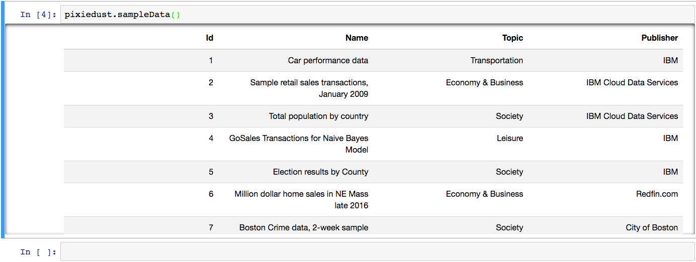

Load Data¶
Sample Data Sets¶
PixieDust comes with sample data. To start playing with the display() API and other PixieDust features, load and then visualize one of our many sample data sets.
To call the list of data sets, run the following command in your notebook:
pixiedust.sampleData()
You get a list of the data sets included with PixieDust.
Note
If you get an error, and you’re running Spark 1.6, run the following command to manually install packages missing in 1.6 (You need to do so only once.):
pixiedust.installPackage("com.databricks:spark-csv_2.10:1.5.0")
pixiedust.installPackage("org.apache.commons:commons-csv:0")
To create a pySpark DataFrame for one of the samples, just enter its number in the following command. For example, to load Set 6, Million Dollar Home sales, run the command:
home_df = pixiedust.sampleData(6)
Load a CSV using its URL¶
You can also replace the number with a URL. If you have a CSV file online, access it by entering the URL in the parentheses, like this:
home_df = pixiedust.sampleData("https://openobjectstore.mybluemix.net/misc/milliondollarhomes.csv")
Other Data Sources¶
PixieDust provides these sample data sets as a convenience to help you get started fast. To load or connect to your own data source, follow the steps you normally would from within a notebook. Our team has created some notebook tutorials which show how to connect to Cloudant, Twitter, and other data sources. See: Predict Flight Delays with Apache Spark MLLib, FlightStats, and Weather Data and Sentiment Analysis of Twitter Hashtags